The main impact of a 200 basis-point (2.00 percentage-point) rise in United States interest rates on Japan is a 0.05% drop in GDP by the 11th quarter — a limited spillover. Japan ranks 15th of the countries covered by absolute GDP response, and sits in the "minimal" band. The shock is a US monetary tightening, transmitted to Japan through global financial conditions rather than through any domestic policy move. The peak output loss is small in absolute terms, and the path is slow-burning: GDP is essentially flat in the first quarter (−0.001% versus baseline), builds gradually through the first year, and only reaches its trough in Q11. This is a modest, delayed, and persistent drag rather than a sharp recessionary hit.
Demand and trade. Household consumption (Consumption) falls to a peak shortfall of 0.03% by Q11, tracking the GDP path closely and fading only slowly thereafter. Private investment (Investment) is hit harder, peaking at −0.14% in Q10 as the cost of capital rises; it remains below baseline through Q20. Net exports (the trade balance) actually improve, peaking at +0.07% of GDP in Q10 — the model does not split imports from exports, so this is the net trade position, and it strengthens because the real exchange rate moves in Japan's favour. Government spending (Gov Spending) rises modestly, peaking at +0.01% in Q11, a small automatic-stabiliser offset. Government debt (Gov Debt) drifts lower relative to baseline, reaching −0.008% by Q20, consistent with the small improvement in the primary balance and the stronger trade position.
External / FX. The real exchange rate (Currency Strength) appreciates, peaking at +0.57% in Q8. A stronger real exchange rate would normally be expected to hurt net exports, but here the trade balance improves at the same time. The resolution is that the appreciation is a real-rate phenomenon driven by the domestic real interest rate path rather than a nominal competitiveness loss: the improvement in net exports reflects weaker domestic demand, which compresses imports more than the stronger currency compresses exports. The currency strength fades only gradually, still +0.07% above baseline at Q20.
Labour. Employment falls to a peak shortfall of 0.03% by Q14, a lagged response consistent with the slow output path. Unemployment rises by 0.03 percentage points, peaking at +0.026 pp in Q14. Real wages rise, peaking at +0.06% in Q13 — a real wage gain that reflects the fall in CPI inflation rather than any nominal wage boom, since the labour market is loosening at the same time.
Prices. CPI inflation rises initially, peaking at +0.02 percentage points in Q2, then turns negative from Q10 onward and ends at −0.005 pp by Q20. Domestic inflation follows the same pattern, peaking at +0.02 pp in Q2 and turning negative from Q10. Firms' marginal cost falls, peaking at −0.03% in Q11, consistent with the weaker demand and the disinflationary impulse that dominates the second half of the horizon.
Financial conditions. The local policy rate rises slightly, peaking at +0.008 pp in Q8, then turns negative from Q16 — a small, temporary tightening followed by a modest easing as inflation undershoots. Government 2-year yields rise to +0.007 pp in Q4 before turning negative from Q13; 5-year yields peak at +0.003 pp in Q1 and turn negative from Q10; 10-year yields peak at −0.002 pp in Q17, having turned negative from Q6. Bond prices fall, peaking at −0.89% in Q8, the largest single response in the table, reflecting the higher discount rates. Equity prices fall to −0.23% in Q8 and remain below baseline through Q20. Tobin's Q falls to −0.10% in Q10, tracking the investment decline. House prices fall to −0.04% by Q18, a slow-moving response. Bank credit contracts to −0.02% by Q17, and lending spreads widen by a trivial +0.0001 pp by Q16 — the credit channel is present but very weak.
Sectoral and capital. Manufacturing GDP is the hardest-hit sector, falling to −0.17% in Q8, consistent with its greater exposure to trade and the cost of capital. Services GDP falls to −0.03% in Q11, a smaller and later response. The capital stock declines to −0.007% by Q20, a slow depreciation-driven adjustment.
Timing. The GDP hit is largest in Q11 at −0.05%, and it has not faded by Q20 — the Q20 value is −0.012%, still clearly below baseline. The equity and bond-price responses peak earlier, in Q8, and the manufacturing hit also peaks in Q8. The inflation response turns negative from Q10 and remains negative through Q20. This is a shock whose financial-market impact front-loads and whose real-economy impact builds slowly and persists.
Close. These are model impulse responses versus baseline, not forecasts. They describe how Japan's economy deviates from a no-shock path under a 200bp US rate rise, holding everything else constant. The headline numbers are small: a 0.05% GDP shortfall, a 0.23% equity decline, a 0.89% bond-price fall. The story is one of a limited, delayed, and persistent spillover, with the trade balance and real wages moving in Japan's favour even as output, investment, and employment weaken.
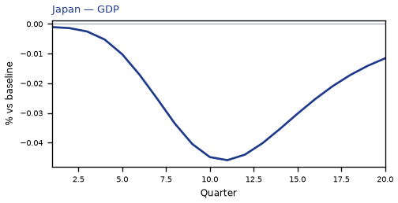
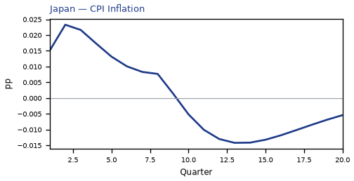
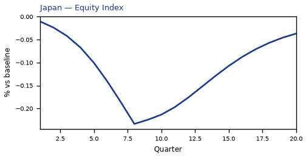
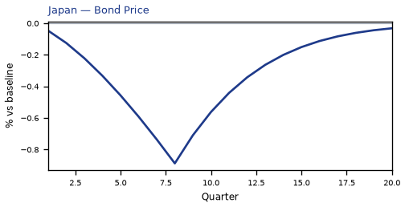
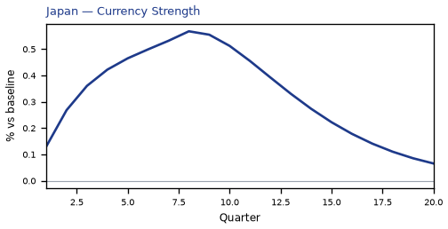
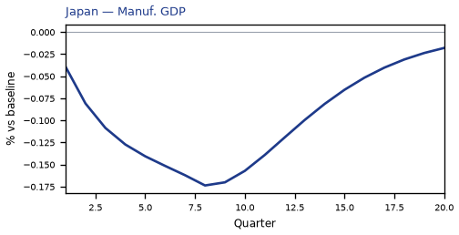
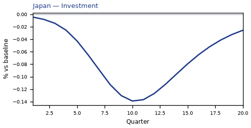
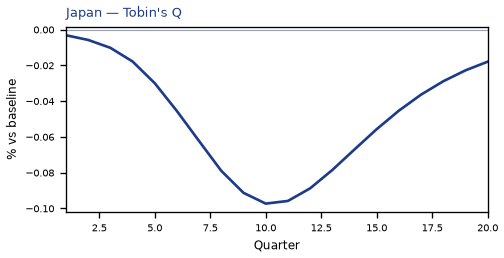
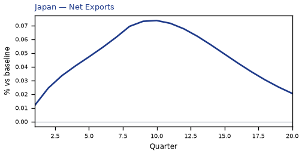
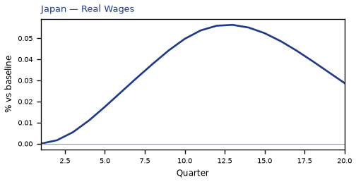
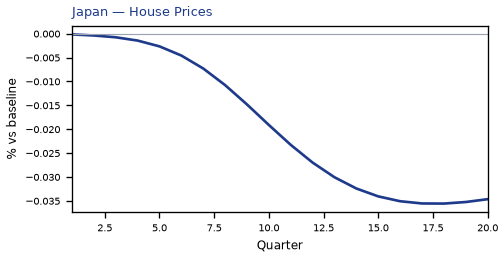
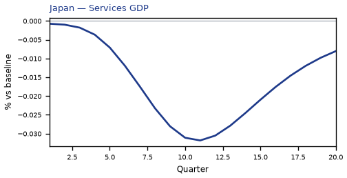
source=live · global_macro_v5 · contract v6 · Q1–Q20 JSON · not financial advice